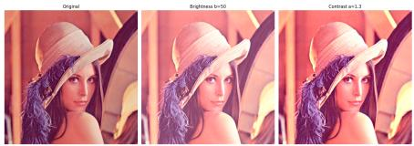
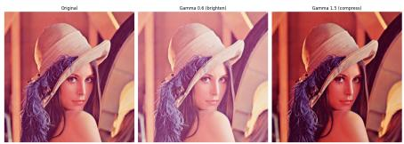

第二部分 图像增强与滤波¶
第二部分：图像增强与滤波¶
核心问题¶
现实图像往往存在噪声、模糊、低对比度、光照不均等问题。图像增强与滤波的目标，是让图像更适合观察、分析和后续算法处理。
低质量图像 \(\longrightarrow\) 增强后的图像 \(\longrightarrow\) 后续分析
- 让暗图变亮；
- 让模糊边缘更清楚；
- 去除噪声干扰；
- 提高目标与背景的差异。
注意¶
图像增强不一定追求 “真实”，而是追求 “更有用”。
什么是图像增强？¶
定义¶
图像增强是指通过一定的变换方法，改善图像的视觉效果或突出其中有用信息。
视觉层面¶
- 看得更清楚
- 对比度更明显
- 细节更容易观察
- 暗部或亮部信息更突出
算法层面¶
- 便于边缘检测
- 便于目标分割
- 便于特征提取
- 提高后续识别效果
一句话¶
图像增强是图像理解之前的重要预处理步骤。
图像增强的基本类型¶
常见方法¶
图像增强方法大致可以分为两类：点运算和邻域运算。
点运算¶
- 每个像素独立变化
- 不考虑周围像素 例如：亮度调整、对比度调整、灰度变换
邻域运算¶
- 当前像素由周围像素共同决定
- 考虑局部结构 例如：平滑滤波、锐化滤波、边缘增强
灰度变换：最简单的图像增强¶
基本思想¶
对每个像素的灰度值进行函数变换：
- \(r\) : 原始灰度值；- \(s\) : 变换后的灰度值；- \(T\) : 灰度变换函数。
常见灰度变换¶
- 线性变换：调整亮度和对比度；
- 对数变换：增强暗部细节；
- Gamma 变换：模拟显示设备和视觉感知；
- 反色变换：突出特殊结构。
线性灰度变换¶
基本形式¶
- \(a\) 控制对比度；
- \(b\) 控制整体亮度；
- \(a > 1\) ：增强对比度；
- \(0 < a < 1\) ：降低对比度；
- \(b > 0\) ：整体变亮；
- \(b < 0\) ：整体变暗。
工程理解¶
很多手机修图软件中的 “亮度” 和 “对比度” 调节，本质上就是灰度变换。
代码演示：线性变换¶


Python 实现：
# 对图像做亮度提升（s=a*r+b）和对比度增强（a=1.3，b=0）
import cv2, matplotlib.pyplot as plt, numpy as np
bgr = cv2.imread("images/lena_color_512.png");
rgb = cv2.cvtColor(bgr, cv2.COLOR_BGR2RGB)
bi = np.clip(rgb.astype(int) + 50, 0, 255).astype(np.uint8)
co = np.clip(rgb.astype(int) * 1.3, 0, 255).astype(np.uint8)
t = ["Original", "Brightness b=50", "Contrast a=1.3"]
f, ax = plt.subplots(1, 3, figsize=(16, 8))
for a, i, ti in zip(ax, [rgb, bi, co], t):
a.imshow(i); a.set_title(ti); a.axis("off")
plt.tight_layout(); plt.show()
代码演示：非线性变换¶

Python 实现：
# 非线性映射 s = c * r^gamma, gamma<1 提亮暗部，gamma>1 压缩暗部
import cv2, matplotlib.pyplot as plt, numpy as np
bgr = cv2.imread("images/lena_color_512.png"); rgb = cv2.cvtColor(bgr, cv2.COLOR_BGR2RGB)
g06 = np.clip((rgb/255)**0.6*255, 0, 255).astype("uint8")
g15 = np.clip((rgb/255)**1.5*255, 0, 255).astype("uint8")
t = ["Original", "Gamma 0.6 (brighten)", "Gamma 1.5 (compress)]
f, ax = plt.subplots(1, 3, figsize=(16, 8))
for a, i, ti in zip(ax, [rgb, g06, g15], t): a.imshow(i); a.set_title(ti); a.axis("off")
plt.tight_layout(); plt.show()
直方图：观察灰度分布¶
什么是直方图？¶
图像直方图统计每个灰度值在图像中出现的次数。
- 横轴：灰度值；
- 纵轴：像素数量；
- 暗图像：灰度集中在低值区域；
- 亮图像：灰度集中在高值区域；
- 低对比度图像：灰度分布范围较窄。
关键作用¶
直方图可以帮助我们判断图像是偏暗、偏亮，还是对比度不足。
直方图均衡化¶
基本思想¶
把原来集中在某些灰度范围内的像素，重新分布到更宽的灰度范围中，从而增强图像对比度。
其中 T 由灰度累计分布函数决定。
效果¶
- 低对比度图像会变得更清晰；
- 暗部和亮部细节可能更加明显；
- 但也可能放大噪声；
- 对某些图像可能产生过增强。
代码演示：直方图均衡化¶
Python 实现：
# 绘制 RGB 三通道直方图 → 转换到 YCrCb 空间，仅对 Y（亮度）通道均衡化
import cv2, matplotlib.pyplot as plt, numpy as np
bgr = cv2.imread("images/lena_color_512.png"); rgb = cv2.cvtColor(bgr, cv2.COLOR_BGR2RGB)
for i, c in enumerate("rgb"):
h = cv2.calcHist([rgb], [i], None, [256], [0, 256])
plt.plot(h, color=c, label=f"c.upper()-channel", lw=1.5)
plt.xlim(0, 256); plt.legend(); plt.grid(alpha=.3); plt.show()
y = cv2.cvtColor(rgb, cv2.COLOR_RGB2YCrCb); y[:, :, 0]=cv2.equalizeHist(y[:, :, 0])
eq = cv2.cvtColor(y, cv2.COLOR_YCrCb2RGB)
f, ax = plt.subplots(2, 2, figsize=(14, 10))
for col, (im, ti) in enumerate(zip([rgb, eq], ["Original","Equalized"])):
ax[0, col].imshow(im); ax[0, col].set_title(ti); ax[0, col].axis("off")
gr = cv2.cvtColor(im, cv2.COLOR_RGB2GRAY)
ax[1, col].hist(gr.ravel(), 256, [0, 256], color="gray"); ax[1, col].set_xlim(0, 256)
ax[1, col].set_title(f"ti Histogram")
plt.tight_layout(); plt.show()
图像滤波：利用邻域信息¶
基本思想¶
滤波不是只改变一个像素本身，而是根据它周围一小片区域的信息来决定新的像素值。
- \(f\) : 原始图像；
- \(g\) : 滤波后的图像；- \(w\) ：滤波模板或卷积核；
- 邻域大小决定考虑多少周围信息。
一句话¶
滤波的核心，是用局部邻域中的信息重新估计当前像素。
均值滤波：最简单的平滑方法¶
基本思想¶
用邻域内像素的平均值替代当前像素值。
优点¶
实现简单 - 可以减弱随机噪声 - 计算速度快
缺点¶
- 会模糊边缘
- 细节容易被抹平
- 对椒盐噪声效果一般
高斯滤波：更自然的平滑¶
基本思想¶
距离中心越近的像素权重越大，距离越远的像素权重越小。
- \(\sigma\) 控制平滑程度；
- \(\sigma\) 越大，图像越平滑；
- 高斯滤波比均值滤波更加自然；
- 常用于去噪和边缘检测前的预处理。
直观理解¶
高斯滤波相当于 “中心像素附近的信息更可信，远处信息影响较小”。
中值滤波：对椒盐噪声特别有效¶
基本思想¶
用邻域中所有像素的中位数替代当前像素。
适用场景¶
- 图像中出现黑白随机点；
- 传输或传感器带来脉冲噪声；
- 希望去噪同时尽量保留边缘。
关键区别¶
均值滤波容易被极端噪声值影响，而中值滤波对极端值更稳健。
代码演示：空间滤波¶
Python 实现：
# 添加高斯噪声（var=25）→ 均值滤波（3×3）与高斯滤波（3×3）对比
# 添加椒盐噪声（0.05）→ 中值滤波（3×3），观察不同滤波器对噪声的抑制效果
import cv2, matplotlib.pyplot as plt, numpy as np
bgr_img = cv2.imread("images/lena_color_512.png")
g = cv2.cvtColor(bgr_img, cv2.COLOR_BGR2GRAY)
gs = np.clip(g.astype(int)+np.random.normal(0,5,g.shape).astype(int),0,255).astype("uint8")
sp = g.copy(); m=np.random.random(sp.shape); sp[m<.025]=0; sp[m>.975]=255
me = cv2.blur(gs,(3,3)); ga=cv2.GaussianBlur(gs,(3,3),1); md=cv2.medianBlur(sp,3)
f,ax = plt.subplots(2,4,figsize=(20,10))
for c,(im,t) in enumerate(zip([g,gs,me,ga],["Orig","+Gauss noise","Mean 3×3","Gauss 3×3"])):
ax[0,c].imshow(im,"gray",vmin=0,vmax=255); ax[0,c].set_title(t); ax[0,c].axis("off")
for c,(im,t) in enumerate(zip([g,sp,md],["Orig","+S&P noise","Median 3×3"])):
ax[1,c].imshow(im,"gray",vmin=0,vmax=255); ax[1,c].set_title(t); ax[1,c].axis("off")
ax[1,3].axis("off"); plt.tight_layout(); plt.show()
第二部分阶段小结¶
1 图像增强的目标是让图像更清楚、更有用。 ② 点运算只改变单个像素的灰度值。 ③ 灰度变换可以调节亮度和对比度。 4 直方图可以描述图像的灰度分布。 ⑤ 直方图均衡化可以增强对比度。 ⑥ 滤波通过邻域信息改善图像质量。 均值滤波、高斯滤波、中值滤波适合不同噪声场景。
下一步¶
平滑滤波可以去噪，但也可能模糊边缘。那么，如何突出边缘和细节？
接下来：锐化与边缘检测